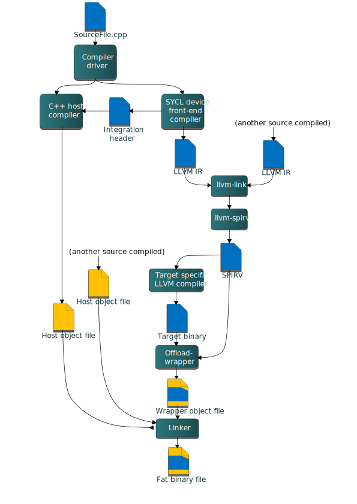
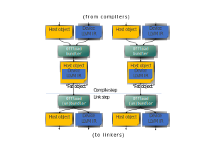
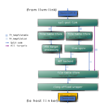
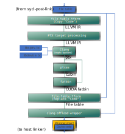

oneAPI DPC++ Compiler and Runtime architecture design¶
Introduction¶
This document describes the architecture of the DPC++ compiler and runtime library. For DPC++ specification see spec.
DPC++ Compiler architecture¶
DPC++ application compilation flow:

Diagram 1. Application build flow.
DPC++ compiler logically can be split into the host compiler and a number of
device compilers—one per each supported target. Clang driver orchestrates the
compilation process, it will invoke the device compiler once per each requested
target, then it will invoke the host compiler to compile the host part of a
SYCL source. In the simplest case, when compilation and linkage are done in one
compiler driver invocation, once compilation is finished, the device object
files (which are really LLVM IR files) are linked with the llvm-link tool.
The resulting LLVM IR module is then translated into a SPIR-V module using the
llvm-spirv tool and wrapped in a host object file using the
clang-offload-wrapper tool. Once all the host object files and the wrapped
object with device code are ready, the driver invokes the usual platform linker
and the final executable called “fat binary” is produced. This is a host
executable or library with embedded linked images for each target specified at
the command line.
There are many variations of the compilation process depending on whether user chose to do one or more of the following:
perform compilation separately from linkage
compile the device SPIR-V module ahead-of-time for one or more targets
perform device code splitting so that device code is distributed across multiple modules rather than enclosed in a single one
perform linkage of static device libraries Sections below provide more details on some of those scenarios.
SYCL sources can be also compiled as a regular C++ code, in this mode there is no “device part” of the code — everything is executed on the host.
Device compiler is further split into the following major components:
Front-end - parses input source, “outlines” device part of the code, applies additional restrictions on the device code (e.g. no exceptions or virtual calls), generates LLVM IR for the device code only and “integration header” which provides information like kernel name, parameters order and data type for the runtime library.
Middle-end - transforms the initial LLVM IR to get consumed by the back-end. Today middle-end transformations include just a couple of passes:
Optionally: Address space inference pass
TBD: potentially the middle-end optimizer can run any LLVM IR transformation with only one limitation: back-end compiler should be able to handle transformed LLVM IR.
Optionally: LLVM IR → SPIR-V translator.
Back-end - produces native “device” code. It is shown as “Target-specific LLVM compiler” box on Diagram 1. It is invoked either at compile time (in ahead-of-time compilation scenario) or at runtime (in just-in-time compilation scenario).
Design note: in current design we use SYCL device front-end compiler to produce the integration header for two reasons. First, it must be possible to use any host compiler to produce SYCL heterogeneous applications. Second, even if the same clang compiler is used for the host compilation, information provided in the integration header is used (included) by the SYCL runtime implementation, so the header must be available before the host compilation starts.
SYCL support in Clang front-end¶
SYCL support in Clang front-end can be split into the following components:
Device code outlining. This component is responsible for identifying and outlining “device code” in the single source.
SYCL kernel function object (functor or lambda) lowering. This component creates an OpenCL kernel function interface for SYCL kernels.
Device code diagnostics. This component enforces language restrictions on device code.
Integration header generation. This component emits information required for binding host and device parts of the SYCL code via OpenCL API.
Device code outlining¶
Here is a code example of a SYCL program that demonstrates compiler outlining work:
int foo(int x) { return ++x; }
int bar(int x) { throw std::exception{"CPU code only!"}; }
...
using namespace sycl;
queue Q;
buffer<int, 1> a{range<1>{1024}};
Q.submit([&](handler& cgh) {
auto A = a.get_access<access::mode::write>(cgh);
cgh.parallel_for<init_a>(range<1>{1024}, [=](id<1> index) {
A[index] = index[0] * 2 + foo(42);
});
}
...
In this example, the compiler needs to compile the lambda expression passed
to the sycl::handler::parallel_for method, as well as the function foo
called from the lambda expression for the device.
The compiler must also ignore the bar function when we compile the
“device” part of the single source code, as it’s unused inside the device
portion of the source code (the contents of the lambda expression passed to the
sycl::handler::parallel_for and any function called from this lambda
expression).
The current approach is to use the SYCL kernel attribute in the runtime to
mark code passed to sycl::handler::parallel_for as “kernel functions”.
The runtime library can’t mark foo as “device” code - this is a compiler
job: to traverse all symbols accessible from kernel functions and add them to
the “device part” of the code marking them with the new SYCL device attribute.
Lowering of lambda function objects and named function objects¶
All SYCL memory objects shared between host and device (buffers/images,
these objects map to OpenCL buffers and images) must be accessed through special
accessor classes. The “device” side implementation of these classes contains
pointers to the device memory. As there is no way in OpenCL to pass structures
with pointers inside as kernel arguments all memory objects shared between host
and device must be passed to the kernel as raw pointers.
SYCL also has a special mechanism for passing kernel arguments from host to
the device. In OpenCL kernel arguments are set by calling clSetKernelArg
function for each kernel argument, meanwhile in SYCL all the kernel arguments
are fields of “SYCL kernel function” which can be defined as a lambda function
or a named function object and passed as an argument to SYCL function for
invoking kernels (such as parallel_for or single_task). For example, in the
previous code snippet above accessor A is one such captured kernel argument.
To facilitate the mapping of SYCL kernel data members to OpenCL kernel arguments and overcome OpenCL limitations we added the generation of an OpenCL kernel function inside the compiler. An OpenCL kernel function contains the body of the SYCL kernel function, receives OpenCL-like parameters and additionally does some manipulation to initialize SYCL kernel data members with these parameters. In some pseudo code the OpenCL kernel function for the previous code snippet above looks like this:
// SYCL kernel is defined in SYCL headers:
template <typename KernelName, typename KernelType/*, ...*/>
__attribute__((sycl_kernel)) void sycl_kernel_function(KernelType KernelFuncObj) {
// ...
KernelFuncObj();
}
// Generated OpenCL kernel function
__kernel KernelName(global int* a) {
KernelType KernelFuncObj; // Actually kernel function object declaration
// doesn't have a name in AST.
// Let the kernel function object have one captured field - accessor A.
// We need to init it with global pointer from arguments:
KernelFuncObj.A.__init(a);
// Body of the SYCL kernel from SYCL headers:
{
KernelFuncObj();
}
}
OpenCL kernel function is generated by the compiler inside the Sema using AST nodes. Additional details of kernel parameter passing may be found in the document SYCL Kernel Parameter Handling and Array Support.
SYCL support in the driver¶
SYCL offload support in the driver is based on the clang driver concepts and defines:
target triple and a native tool chain for each target (including “virtual” targets like SPIR-V).
SYCL offload action based on generic offload action.
SYCL compilation pipeline has a peculiarity compared to other compilation scenarios - some of the actions in the pipeline may output multiple “clusters” of files, consumed later by other actions. For example, each device binary maybe accompanied by a symbol table and a specialization constant map - additional information used by the SYCL runtime library - and it needs to be stored into the device binary descriptor by the offload wrapper tool. With device code splitting feature enabled, there can be multiple such sets (clusters) of files - one per each separate device binary.
Current design of clang driver doesn’t allow to model that, namely:
Multiple inputs/outputs in the action graph.
Logical grouping of multiple inputs/outputs. For example, an input or output can consist of multiple pairs of files, where each pair represents information for a single device code module: [a file with device code, a file with exported symbols].
To support this, SYCL introduces the file-table-tform tool. This tool can
transform file tables following commands passed as input arguments. Each row
in the table represents a file cluster, each column - a type of data associated
with a cluster. The tool can replace and extract columns. For example, the
sycl-post-link tool can output two file clusters and the following file
table referencing all the files in the clusters:
[Code|Symbols|Properties]
a_0.bc|a_0.sym|a_0.props
a_1.bc|a_1.sym|a_1.props
When participating in the action graph this tool inputs a file table
(TY_Tempfiletable clang input type) and/or a file list (TY_Tempfilelist),
performs requested transformations and outputs a file table or list. From the
clang design standpoint there is still single input and output, even though in
reality there are multiple.
For example, depending on compilation options, files from the “Code” column
above may need to undergo AOT compilation after the device code splitting step,
performed as a part of the code transformation sequence done by the
sycl-post-link tool. The driver will then:
Use the
file-table-tformto extract the code files and produce a file list:
a_0.bc
a_1.bc
Pass this file list to the
llvm-foreachtool along with AOT compilation command to invoke it on every file in the list. This will result in another file list
a_0.bin
a_1.bin
Then
file-table-tformis invoked again to replace.bcwith.binin the filetable to get a new filetable:
[Code|Symbols|Properties]
a_0.bin|a_0.sym|a_0.props
a_1.bin|a_1.sym|a_1.props
Finally, this filetable is passed to the
clang-offload-wrappertool to construct a wrapper object which embeds all those files.
Note that the graph does not change when more rows (clusters) or columns (e.g. a “manifest” file) are added to the table.
Enable SYCL offload¶
To enable compilation following single-source multiple compiler-passes (SMCP) technique which is described in the SYCL specification, a special option must be passed to the clang driver:
-fsycl
With this option specified, the driver will invoke the host compiler and a
number of SYCL device compilers for targets specified in the -fsycl-targets
option. If -fsycl-targets is not specified, then single SPIR-V target is
assumed, and single device compiler for this target is invoked.
The option -sycl-std allows specifying which version of
the SYCL standard will be used for the compilation.
The default value for this option is 2020.
Ahead of time (AOT) compilation¶
Ahead-of-time compilation is the process of invoking the back-end at compile time to produce the final binary, as opposed to just-in-time (JIT) compilation when final code generation is deferred until application runtime time.
AOT compilation reduces application execution time by skipping JIT compilation and final device code can be tested before deploying.
JIT compilation provides portability of device code and target specific optimizations.
List of native targets¶
The ahead-of-time compilation mode implies that there must be a way to specify a set of target architectures for which to compile device code. By default, the compiler generates SPIR-V and OpenCL device JIT compiler produces native target binary.
To produce binaries for target architectures identified by target triples
triple1 and triple2, the following SYCL compiler options are used:
-fsycl-targets=triple1,triple2
will produce binaries from SYCL kernels for devices identified by the two
target triples. This basically tells the driver which device compilers must be
invoked to compile the SYCL kernel code. By default, the JIT compilation
approach is assumed and device code is compiled for a single target triple -
[spir,spir64]-*-*.
Device code formats¶
Each target may support a number of code forms, each device compiler defines
and understands mnemonics designating a particular code form, for example
“visa:3.3” could designate virtual ISA version 3.3 for Intel GPU target (Gen
architecture). User can specify desired code format using the target-specific
option mechanism, similar to OpenMP.
-Xsycl-target-backend=<triple> "arg1 arg2 ..."
For example, to support offload to Gen9/vISA3.3, the following options would be used:
-fsycl -fsycl-targets=spir64_gen -Xsycl-target-backend "-device skl"
The driver passes the -device skl parameter directly to the Gen device backend
compiler ocloc without parsing it.
ocloc is also capable of offline compilation for several ISA
versions/Gen architectures. For example, to make the device binary
compatible with all Intel Gen9 GPU platforms, one could use:
-fsycl -fsycl-targets=spir64_gen -Xsycl-target-backend "-device gen9"
For more details on supported platforms and argument syntax, refer to
the GPU offline compiler manual by detecting your local ocloc
installation and running ocloc compile --help.
Separate Compilation and Linking¶
The compiler supports such features as
linking of device code obtained from different source files before generating the final SPIR-V to be fed to the back-end.
splitting application build into separate compile and link steps.
Overall build flow changes compared to the one shown on the Diagram 1 above in the following way. Compilation step ends with engaging the offload bundler to generate so-called “fat object” for each <host object, device code IR> pair produced from the same heterogeneous source. The fat object files become the result of compilation similar to object files with usual non-offload compiler. Link step starts with breaking the input fat objects back into their constituents, then continue the same way as on the Diagram 1 - link host code and device code separately and finally produce a “fat binary”.
The diagram below illustrates the changes in the build flow. The offload
bundler/unbundler actions are basically inserted between the llvm-link and
the linker invocations as shown on the Diagram 1.
 Diagram 2. Split compilation and linkage.
Current implementation uses LLVM IR as a default device binary format for fat objects and translates “linked LLVM IR” to SPIR-V. One of the reasons for this
decision is that SPIR-V doesn’t support linking template functions, which could
be defined in multiple modules and linker must resolve multiple definitions.
LLVM IR uses function attributes to satisfy “one definition rule”, which have
no counterparts in SPIR-V.
Fat binary creation details¶
“Fat binary” is a result of the final host linking step - this is a host binary with device binary(s) embedded. When run, it automatically registers all available device binaries within the SYCL runtime library. This section describes how this is achieved.
The output fat binary is created with usual linker - e.g. ld on Linux and
link.exe on Windows. For the linker to be able to embed the device binaries,
they are first “wrapped” into a host object file called “wrapper object”. Then
this wrapper object is linked normally with the rest of host objects and/or
libraries.
The wrapper object is created by the clang-offload-wrapper tool, or simply
“offload wrapper”. The created wrapper object has two main components:
Global symbol - offload descriptor - pointing to a special data structure put into in the object’s data section. It encompasses all needed information about the wrapped device binaries - number of binaries, symbols each binary defines, etc. - as well as the binaries themselves.
Registration/unregistration functions. The first one is put into a special section so that it is invoked when the parent fat binary is loaded into a process at runtime, the second one is put into another section to be invoked when the parent fat binary is unloaded. The registration function basically takes the pointer to the offload descriptor and invokes SYCL runtime library’s registration function passing it as a parameter.
The offload descriptor type hierarchy is described in the pi.h header. The
top-level structure is pi_device_binaries_struct.
Device Link¶
The -fsycl-link flag instructs the compiler to fully link device code without fully linking host code. The result of such a compile is a fat object that contains a fully linked device binary. The primary motivation for this flow is to allow users to save re-compile time when making changes that only affect their host code. In the case where device image generation takes a long time (e.g. FPGA), this savings can be significant.
For example, if the user separated source code into four files: dev_a.cpp, dev_b.cpp, host_a.cpp and host_b.cpp where only dev_a.cpp and dev_b.cpp contain device code, they can divide the compilation process into three steps:
Device link: dev_a.cpp dev_b.cpp -> dev_image.o (contain device image)
Host Compile (c): host_a.cpp -> host_a.o; host_b.cpp -> host_b.o
Linking: dev_image.o host_a.o host_b.o -> executable
Step 1 can take hours for some targets. But if the user wishes to recompile after modifying only host_a.cpp and host_b.cpp, they can simply run steps 2 and 3 without rerunning the expensive step 1.
The compiler is responsible for verifying that the user provided all the relevant files to the device link step. There are 2 cases that have to be checked:
Missing symbols referenced by the kernels present in the device link step (e.g. functions called by or global variables used by the known kernels).
Missing kernels.
Case 1 can be identified in the device binary generation stage (step 1) by scanning the known kernels. Case 2 must be verified by the driver by checking for newly introduced kernels in the final link stage (step 3).
Device Link during compilation¶
The -fno-sycl-rdc flag can be used in combination with the -c option
when generating fat objects. This option combination informs the compiler to
perform a full device link stage against the device object, creating a fat
object that contains the corresponding host object and a fully compiled device
binary. It is expected that usage of -fno-sycl-rdc coincide with
ahead of time compiling.
When using the generated fat object in this case, the compiler will recognize the fat object that contains the fully linked device binary. The device binary will be unbundled and linked during the final host link and will not be sent through any additional device linking steps.
Generation of fat object: a.cpp -> a_fat.o (contains host object and full device image)
Linking: a_fat.o -> executable
The generation of the full device image during the compilation (-c) step of creating the object allows for library creation that does not require full device linking steps which can be a burden to the user. Providing these early device linking steps give the provider of the archives/objects a better user experience.
Device code post-link step¶
At link time all the device code is linked into
a single LLVM IR module unless -fno-sycl-rdc is specified.
sycl-post-link tool performs a number of final transformations on this LLVM IR
module before handing it off to the offload wrapper. Those include:
device code splitting
symbol table generation
specialization constants lowering
Depending on options, sycl-post-link can output either a single LLVM IR file,
or multiple files plus a file table referencing all of them. See the
“SYCL support in the driver” section for overall description of file table. The
diagram below shows possible clang action graphs which compilation process will
follow from the single linked LLVM IR module to creating the wrapper object.
There are multiple possible variants of the graph depending on:
specific target requirements
device code splitting
AOT compilation

Diagram 3. Device code link flows.
Colors of the graph’s edges show which paths are taken depending on the above
factors. Each edge is also annotated with the input/output file type.
The diagram does not show the llvm-foreach tool invocations for clarity.
This tool invokes given command line over each file in a file list. In this
diagram the tool is applied to llvm-spirv and AOT backend whenever the
input/output type is TY_tempfilelist and the target is not PTX.
Following this, file-table-tform takes two inputs - the file table and a file
list coming either from llvm-spirv or from the AOT backend.
Targeting PTX currently only accepts a single input file for processing, so
file-table-tform is used to extract the code file from the file table, which
is then processed by the
“PTX target processing” step.
The resulting device binary is inserted back into the file table in place of the
extracted code file using file-table-tform. If -fno-sycl-rdc is specified,
all shown tools are invoked multiple times, once per translation unit rather than
once total. See Non-Relocatable Device Code for
more information.
Device code splitting¶
Putting all device code into a single SPIR-V module does not work well in the following cases:
There are thousands of kernels defined and only small part of them is used at run-time. Having them all in one SPIR-V module significantly increases JIT time.
Device code can be specialized for different devices. For example, kernels that are supposed to be executed only on FPGA can use extensions available for FPGA only. This will cause JIT compilation failure on other devices even if this particular kernel is never called on them.
To resolve these problems the compiler can split a single module into smaller ones. The following features is supported:
Emitting a separate module for source (translation unit)
Emitting a separate module for each kernel
If the device code does not use SYCL_EXTERNAL functions, device code splitting
can be combined with the -fno-sycl-rdc option for improved compiler performance.
The current approach is:
Generate special meta-data with translation unit ID for each kernel in SYCL front-end. This ID will be used to group kernels on per-translation unit basis
Link all device LLVM modules using llvm-link
Perform split on a fully linked module, unless
-fno-sycl-rdcis specified, where splits are performed on a module containing only current translation unit and linked device librariesGenerate a symbol table (list of kernels) for each produced device module for proper module selection in runtime
Perform SPIR-V translation and AOT compilation (if requested) on each produced module separately
Add information about presented kernels to a wrapping object for each device image
Device code splitting process:

The llvm-link box does not occur when -fno-sycl-rdc is specified. Rather,
all subsequent boxes occur per-source.
The “split” box is implemented as functionality of the dedicated tool
sycl-post-link. The tool runs a set of LLVM passes to split input module and
generates a symbol table (list of kernels) for each produced device module.
To enable device code split, a special option must be passed to the clang driver:
-fsycl-device-code-split=<value>
There are three possible values for this option:
per_source- enables emitting a separate module for each source (translation unit)per_kernel- enables emitting a separate module for each kerneloff- disables device code split. If-fno-sycl-rdcis specified, the behavior is the same asper_source
Symbol table generation¶
TBD
Specialization constants lowering¶
See corresponding documentation
CUDA support¶
The driver supports compilation to NVPTX when the nvptx64-nvidia-cuda is
passed to -fsycl-targets.
Unlike other AOT targets, the bitcode module linked from intermediate compiled
objects never goes through SPIR-V. Instead it is passed directly in bitcode form
down to the NVPTX Back End. All produced bitcode depends on two libraries,
libdevice.bc (provided by the CUDA SDK) and libspirv-nvptx64--nvidiacl.bc variants
(built by the libclc project). libspirv-nvptx64--nvidiacl.bc is not used directly.
Instead it is used to generate remangled variants
remangled-l64-signed_char.libspirv-nvptx64--nvidiacl.bc and
remangled-l32-signed_char.libspirv-nvptx64--nvidiacl.bc to handle primitive type
differences between Linux and Windows.
Device code post-link step for CUDA¶
During the “PTX target processing” in the device linking step Device
code post-link step, the llvm bitcode
objects for the CUDA target are linked together during the common
llvm-link step and then split using the sycl-post-link tool.
For each temporary bitcode file, clang is invoked for the temporary file to link
libspirv-nvptx64--nvidiacl.bc and libdevice.bc and compile the resulting
module to PTX using the NVPTX backend. The resulting PTX file is assembled
into a cubin using the ptxas tool (part of the CUDA SDK). The PTX file and
cubin are assembled together using fatbinary to produce a CUDA fatbin.
The produced CUDA fatbins then replace the llvm bitcode files in the file table generated
by sycl-post-link. The resulting table is passed to the offload wrapper tool.

Checking if the compiler is targeting NVPTX¶
When the SYCL compiler is in device mode and targeting the NVPTX backend,
the compiler defines __SYCL_DEVICE_ONLY__ and __NVPTX__ macros. This
macro combination can safely be used to enable NVPTX specific code
path in SYCL kernels.
Note: these macros are defined only during the device compilation phase.
NVPTX Builtins¶
Builtins are implemented in OpenCL C within libclc. OpenCL C treats long
types as 64 bit and has no long long types while Windows DPC++ treats long
types like 32-bit integers and long long types like 64-bit integers.
Differences between the primitive types can cause applications to use
incompatible libclc built-ins. A remangler creates multiple libspirv files
with different remangled function names to support both Windows and Linux.
When building a SYCL application targeting the CUDA backend the driver
will link the device code with
remangled-l32-signed_char.libspirv-nvptx64--nvidiacl.bc if the host target is
Windows or it will link the device code with
remangled-l64-signed_char.libspirv-nvptx64--nvidiacl.bc if the host target is
Linux.
When the SYCL compiler is in device mode and targeting the NVPTX backend, the compiler exposes NVPTX builtins supported by clang.
Note: this enable NVPTX specific features which cannot be supported by other targets or the host.
Example:
double my_min(double x, double y) {
#if defined(__NVPTX__) && defined(__SYCL_DEVICE_ONLY__)
// Only available if in device mode and
// while compiling for the NVPTX target.
return __nvvm_fmin_d(x, y);
#else
return x < y ? x : y;
#endif
}
Local memory support¶
In CUDA, users can only allocate one chunk of host allocated shared memory
(which maps to SYCL’s local accessors). This chunk of memory is allocated as an
array extern __shared__ <type> <name>[]; which LLVM represents as an external
global symbol to the CUDA shared memory address space. The NVPTX backend then
lowers this into a .extern .shared .align 4 .b8 PTX instruction.
In SYCL, users can allocate multiple local accessors and pass them as kernel parameters. When the SYCL frontend lowers the SYCL kernel invocation into an OpenCL compliant kernel entry, it lowers local accessors into a pointer to OpenCL local memory (CUDA shared memory) but this is not legal for CUDA kernels.
To legalize the SYCL lowering for CUDA, a SYCL for CUDA specific pass will do the following:
Create a global symbol to the CUDA shared memory address space
Transform all pointers to CUDA shared memory into a 32 bit integer representing the offset in bytes to use with the global symbol
Replace all uses of the transformed pointers by the address to global symbol offset by the value of the integer passed as parameter
As an example, the following kernel:
define void @SYCL_generated_kernel(i64 addrspace(3)* nocapture %local_ptr, i32 %arg, i64 addrspace(3)* nocapture %local_ptr2) {
%0 = load i64, i64 addrspace(3)* %local_ptr
%1 = load i64, i64 addrspace(3)* %local_ptr2
}
Is transformed into this kernel when targeting CUDA:
@SYCL_generated_kernel.shared_mem = external dso_local local_unnamed_addr addrspace(3) global [0 x i8], align 4
define void @SYCL_generated_kernel(i32 %local_ptr_offset, i32 %arg, i32 %local_ptr_offset2) {
%new_local_ptr = getelementptr inbounds [0 x i8], [0 x i8] addrspace(3)* @SYCL_generated_kernel.shared_mem, i32 0, i32 %local_ptr_offset
%new_local_ptr2 = getelementptr inbounds [0 x i8], [0 x i8] addrspace(3)* @SYCL_generated_kernel.shared_mem, i32 0, i32 %local_ptr_offset2
%0 = load i32, i32 addrspace(3)* %new_local_ptr
%1 = load i64, i64 addrspace(3)* %new_local_ptr2
}
On the runtime side, when setting local memory arguments, the CUDA PI implementation will internally set the argument as the offset with respect to the accumulated size of used local memory. This approach preserves the existing PI interface.
Global offset support¶
The CUDA API does not natively support the global offset parameter expected by the SYCL.
In order to emulate this and make generated kernel compliant, an intrinsic
llvm.nvvm.implicit.offset (clang builtin __builtin_ptx_implicit_offset) was
introduced materializing the use of this implicit parameter for the NVPTX
backend. AMDGCN uses the same approach with llvm.amdgpu.implicit.offset and
__builtin_amdgcn_implicit_offset. The intrinsic returns a pointer to i32
referring to a 3 elements array.
Each non-kernel function reaching the implicit offset intrinsic in the
call graph is augmented with an extra implicit parameter of type
pointer to i32. Kernels calling one of these functions using
this intrinsic are cloned:
the original kernel initializes an array of 3
i32to 0 and passes the pointer to this array to each function with the implicit parameter;the cloned function type is augmented with an implicit parameter of type array of 3
i32. The pointer to this array is then passed each function with the implicit parameter.
The runtime will query both kernels and call the appropriate one based on the following logic:
If the 2 versions exist, the original kernel is called if global offset is 0 otherwise it will call the cloned one and pass the offset by value (for CUDA backend), or by ref for AMD;
If only 1 function exist, it is assumed that the kernel makes no use of this parameter and therefore ignores it.
As an example, the following code:
declare i32* @llvm.nvvm.implicit.offset()
define weak_odr dso_local i64 @other_function() {
%1 = tail call i32* @llvm.nvvm.implicit.offset()
%2 = getelementptr inbounds i32, i32* %1, i64 2
%3 = load i32, i32* %2, align 4
%4 = zext i32 %3 to i64
ret i64 %4
}
define weak_odr dso_local void @other_function2() {
ret
}
define weak_odr dso_local void @example_kernel() {
entry:
%0 = call i64 @other_function()
call void @other_function2()
ret void
}
Is transformed into this:
define weak_odr dso_local i64 @other_function(i32* %0) {
%2 = getelementptr inbounds i32, i32* %0, i64 2
%3 = load i32, i32* %2, align 4
%4 = zext i32 %3 to i64
ret i64 %4
}
define weak_odr dso_local void @example_kernel() {
entry:
%0 = alloca [3 x i32], align 4
%1 = bitcast [3 x i32]* %0 to i8*
call void @llvm.memset.p0i8.i64(i8* nonnull align 4 dereferenceable(12) %1, i8 0, i64 12, i1 false)
%2 = getelementptr inbounds [3 x i32], [3 x i32]* %0, i32 0, i32 0
%3 = call i64 @other_function(i32* %2)
call void @other_function2()
ret void
}
define weak_odr dso_local void @example_kernel_with_offset([3 x i32]* byval([3 x i32]) %0) {
entry:
%1 = bitcast [3 x i32]* %0 to i32*
%2 = call i64 @other_function(i32* %1)
call void @other_function2()
ret void
}
Note: Kernel naming is not fully stable for now.
Kernel Fusion Support¶
The experimental kernel fusion extension also supports the CUDA and HIP backends. However, as the CUBIN, PTX and AMD assembly are not suitable input formats for the kernel fusion JIT compiler, a suitable IR has to be added as an additional device binary.
Therefore, in case kernel fusion should be performed for the CUDA or HIP backends, the
user needs to specify the additional flag -fsycl-embed-ir during compilation,
to add LLVM IR as an additional device binary. When the flag -fsycl-embed-ir
is specified, the LLVM IR produced by Clang for the CUDA/HIP backend device
compilation is added to the fat binary file. To this end, the resulting
file-table from sycl-post-link is additionally passed to the
clang-offload-wrapper, creating a wrapper object with target llvm_nvptx64
for the CUDA backend and llvm_amdgcn for the HIP backend.
This device binary in LLVM IR format can be retrieved by the SYCL runtime and
used by the kernel fusion JIT compiler. For the CUDA backend, the resulting fused
kernel is compiled to PTX assembly by the kernel fusion JIT compiler at runtime.
For the HIP backend, the resulting fused kernel is compiled to an AMDGCN binary
by the kernel fusion JIT compiler at runtime, however this output requires
finalization by lld. Rather than adding another dependancy to the fusion jit,
a Requires finalization property is added the binary. The HIP
PI plugin/UR adapter will then use the AMD Compiler Object Manager library
(comgr, part of the ROCm package) in order to finalize it into
a loadable format.
Note that the device binary in LLVM IR does not replace the device binary in target format, but is embed in addition to it.
Integration with SPIR-V format¶
This section explains how to generate SPIR-V specific types and operations from C++ classes and functions.
Translation of SYCL C++ programs to the code executable on heterogeneous systems can be considered as three step process:
translation of SYCL C++ programs into LLVM IR
translation from LLVM IR to SPIR-V
translation from SPIR-V to machine code
LLVM-IR to SPIR-V translation is performed by a dedicated tool - translator. This tool correctly translates most of regular LLVM IR types/operations/etc to SPIR-V.
For example:
Type:
i32→OpTypeIntOperation:
load→OpLoadCalls:
call→OpFunctionCall
SPIR-V defines special built-in types and operations that do not have corresponding equivalents in LLVM IR. E.g.
Type: ??? →
OpTypeEventOperation: ??? →
OpGroupAsyncCopy
Translation from LLVM IR to SPIR-V for special types is also supported, but
such LLVM IR must comply to some special requirements. Unfortunately, there is
no canonical form of special built-in types and operations in LLVM IR, moreover
we can’t re-use existing representation generated by OpenCL C front-end
compiler. For instance, here is how OpGroupAsyncCopy operation looks in LLVM
IR produced by OpenCL C front-end compiler.
@_Z21async_work_group_copyPU3AS3fPU3AS1Kfjj(float addrspace(3)*, float addrspace(1)*, i32, i32)
It’s a regular function, which can conflict with user code produced from C++ source.
DPC++ compiler uses modified solution developed for OpenCL C++ compiler prototype:
Compiler: https://github.com/KhronosGroup/SPIR/tree/spirv-1.1
Headers: https://github.com/KhronosGroup/libclcxx
Our solution re-uses OpenCL data types like sampler, event, image types, etc, but we use different spelling to avoid potential conflicts with C++ code. Spelling convention for the OpenCL types enabled in SYCL mode is:
__ocl_<OpenCL_type_name> // e.g. __ocl_sampler_t, __ocl_event_t
Operations using OpenCL types use special naming convention described in this document. This solution allows us avoid SYCL specialization in SPIR-V translator and leverage clang infrastructure developed for OpenCL types.
SPIR-V operations that do not have LLVM equivalents are declared (but not defined) in the headers and satisfy following requirements:
the operation is expressed in C++ as
externfunction not throwing C++ exceptionsthe operation must not have the actual definition in C++ program
For example, the following C++ code is successfully recognized and translated
into SPIR-V operation OpGroupAsyncCopy:
template <typename dataT>
extern __ocl_event_t
__spirv_OpGroupAsyncCopy(int32_t Scope, __local dataT *Dest,
__global dataT *Src, size_t NumElements,
size_t Stride, __ocl_event_t E) noexcept;
__ocl_event_t e =
__spirv_OpGroupAsyncCopy(cl::__spirv::Scope::Workgroup,
dst, src, numElements, 1, E);
Some details and agreements on using SPIR-V special types and operations¶
The SPIR-V specific C++ enumerators and classes are declared in the file:
sycl/include/CL/__spirv/spirv_types.hpp.
The SPIR-V specific C++ function declarations are in the file:
sycl/include/CL/__spirv/spirv_ops.hpp.
The SPIR-V specific functions are implemented in for the SYCL host device here:
sycl/source/spirv_ops.cpp.
Address spaces handling¶
SYCL specification uses C++ classes to represent pointers to disjoint memory regions on an accelerator to enable compilation with standard C++ toolchain and SYCL compiler toolchain.
For instance:
// check that SYCL mode is ON and we can use non-standard decorations
#if defined(__SYCL_DEVICE_ONLY__)
// GPU/accelerator implementation
template <typename T, address_space AS> class multi_ptr {
// DecoratedType applies corresponding address space attribute to the type T
// DecoratedType<T, global_space>::type == "__attribute__((opencl_global)) T"
// See sycl/include/sycl/access/access.hpp for more details
using pointer_t = typename DecoratedType<T, AS>::type *;
pointer_t m_Pointer;
public:
pointer_t get() { return m_Pointer; }
T& operator* () { return *reinterpret_cast<T*>(m_Pointer); }
}
#else
// CPU/host implementation
template <typename T, address_space AS> class multi_ptr {
T *m_Pointer; // regular undecorated pointer
public:
T *get() { return m_Pointer; }
T& operator* () { return *m_Pointer; }
}
#endif
Depending on the compiler mode multi_ptr will either decorate internal data
with address space attribute or not.
The main address space semantic difference of SYCL mode from OpenCL is that SYCL doesn’t assign OpenCL generic address space to a declaration’s type without explicit address space attribute. Similar to other single-source C++-based GPU programming modes like OpenMP/CUDA/HIP, SYCL uses clang’s “default” address space for types with no address space attributes. During the lowering to LLVM IR, the default address space is mapped to the SPIR generic address space. Declarations are assigned to the relevant memory region depending on their declaration context and pointers to them are cast to generic. This design has two important features: keeps the type system consistent with C++ on one hand and enable tools for emitting device code aligned with SPIR memory model (and other GPU targets).
So inside a function, this variable declaration:
int var;
DPC++ turn into
VarDecl var 'int'
OpenCL compiler turn into
VarDecl var '__private int'
Changing variable type has massive and destructive effect in C++. For instance this does not compile in C++ for OpenCL mode:
template<typename T1, typename T2>
struct is_same {
static constexpr int value = 0;
};
template<typename T>
struct is_same<T, T> {
static constexpr int value = 1;
};
void foo(int p) {
static_assert(is_same<decltype(p), int>::value, "int is not an int?"); // Fails: p is '__private int' != 'int'
static_assert(is_same<decltype(&p), int*>::value, "int* is not an int*?"); // Fails: p is '__private int*' != '__generic int*'
}
To utilize existing clang’s functionality, we re-use following OpenCL address space attributes in SYCL mode:
Address space attribute |
SYCL address_space enumeration |
|---|---|
|
global_space, constant_space |
|
ext_intel_global_host_space |
|
ext_intel_global_device_space |
|
local_space |
|
private_space |
|
N/A |
NOTE: although SYCL device compiler supports
__attribute__((opencl_constant)), the use of this attribute is limited within SYCL implementation. An OpenCL constant pointer can not be casted to a pointer with any other address space (including default).
Compiler/Runtime interface¶
DPC++ Runtime architecture¶
TBD
DPC++ Language extensions to SYCL¶
List of language extensions can be found at extensions